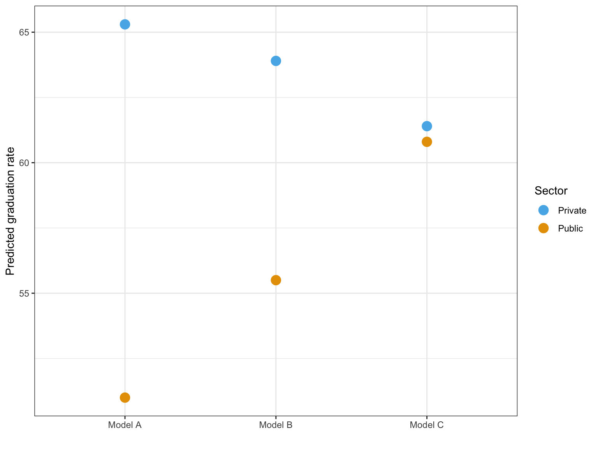

In this chapter, you will learn about how to include dichotomous categorical predictors (i.e., predictors with two levels) in the regression model. To do so, we will use the mn-schools.csv data to examine whether there are differences in graduation rates between public and private colleges and universities. To begin, we will load several libraries and import the data into an object called mn.
# A tibble: 33 × 5
name grad sector sat tuition
<chr> <dbl> <chr> <dbl> <dbl>
1 Augsburg College 65.2 Private 1030 39.3
2 Bethany Lutheran College 52.6 Private 1065 30.5
3 Bethel University, Saint Paul, MN 73.3 Private 1145 39.4
4 Carleton College 92.6 Private 1400 54.3
5 College of Saint Benedict 81.1 Private 1185 43.2
6 Concordia College at Moorhead 69.4 Private 1145 36.6
7 Concordia University-Saint Paul 47.9 Private 990 37.8
8 Crossroads College 26.9 Private 970 25.3
9 Crown College 51.3 Private 1030 33.2
10 Gustavus Adolphus College 81.7 Private 1225 43.8
# ℹ 23 more rows
18.1 Data Exploration
To begin, as always, we will plot the marginal distributions of graduation rates (grad) and educational sector (sector). Since educational sector is a categorical variable, rather than creating a density plot of the marginal distribution, we will create a bar plot. We will also create a scatterplot of graduation rates versus educational sector.
# Density plot of graduation ratesp1 =ggplot(data = mn, aes(x = grad)) +stat_density(geom ="line", color ="#c62f4b") +theme_bw() +xlab("Six-year graduation rate") +ylab("Probability density")# Bar plot of education sectorp2 =ggplot(data = mn, aes(x = sector)) +geom_bar(fill ="#c62f4b") +theme_bw() +xlab("Educational sector") +ylab("Frequency")# Scatterplotp3 =ggplot(data = mn, aes(x = sector, y = grad)) +geom_point() +theme_bw() +xlab("Educational sector") +ylab("Six-year graduation rate")(p1 | p2) / p3
Figure 18.1: LEFT: Density plot of six-year graduation rates. CENTER: Bar plot of education sector. RIGHT: Scatterplot of the six-year graduation rate versus educational sector.
We will also compute the means, standard deviations, and sample sizes for private and public schools.
Table 18.1: Mean (M), standard deviation (SD), and sample size (N) of the six-year graduation rates for 33 Minnesota colleges and universities conditioned on educational sector.
Sector
M
SD
N
Private
65.27
17.58
23
Public
51.03
9.16
10
We note a couple differences in the distribution of graduation rates between public and private schools. First, the mean graduation rates are different. Private schools have a graduation rate that is, on average, 14.2 percentage points higher than public schools. There is also more variation in private schools’ graduation rates than in public schools’ graduation rates. Lastly, we note that the sample sizes are not equal. There are 13 more private schools than there are public schools in the data set.
18.2 Indicator Variables
Before we can compute correlations or fit a regression model, we need to convert educational sector into a numeric variable. In this numeric variable, we will assign the public schools one value, and the private schools another value. The numbers are just stand-ins for the category. As such, they are referred to as indicator variables, since the numerical values only indicate a category.
For example, here we will code public schools as 5 and private schools as 10. To create this new indicator variable, we mutate() a new column (called indicator) onto our mn data frame that takes the value of 5 if sector is Public and 10 if sector is Private. Here we use the if_else() function to carry out this logic.
The correlation between educational sector and graduation rate is small and positive, indicating that institutions with higher graduation rates tend to have higher values on the indicator variable. Since there are only two values mapped to the sector variable, this implies that institutions with higher graduation rates tend to be private institutions.
# Fit regression modellm.a =lm(grad ~1+ indicator, data = mn)# Model-level outputglance(lm.a) |>print(width =Inf)
Chaining the glance() output in the print() function allows us to include the argument width=Inf. This argument prints ALL the columns from the glance() output instead of truncating the output. This hack can also be used to print all of the columns from a data frame that gets truncated as well.
Differences in these indicator values (i.e., educational sector) explain 15.75% of the variation in graduation rates. This is statistically reliable, \(F(1, 31) = 5.80\), \(p=0.022\). Interpreting the coefficients,
The average graduation rate for schools coded as 0 on the indicator variable is 36.8% (\(t(31)=3.54\), \(p = 0.001\)). Since the mapping we used (5 and 10) did not include 0, the intercept and inferential information related to the intercept are meaningless.
Institutions that have coding values that are one-unit differences have, on average, a graduation rate that is 2.85 percentage points different (\(t(31)=2.41\), \(p=0.022\)). The slope information in its current form is also meaningless. But, since the model is linear, we can translate the slope information to be more meaningful. In our mapping, the difference between public and private schools was a 5-point difference. We can use this to compute the difference in graduation rates between these two sectors,
\[
\mathrm{Difference} = 5 \times 2.85 = 14.3
\]
We could also have substituted the mapped values of 5 and 10 into the fitted regression equation to obtain the same result. Substituting the indicator values into the fitted equation, we find the predicted average graduation rates for public and private schools:
The difference in these average graduation rates comes out to 14.3. The p-value associated with the slope coefficient suggests that this difference (or any difference between different values of X computed from the model) is more than we expect because of chance, so we conclude that there is a difference between the average graduation rates of public and private schools. What if we would have used different values in the indicator variable. Let’s try this mapping:
The correlation between educational sector and graduation rate and the model-level output is exactly the same. Institutions with higher graduation rates tend to have higher values on the indicator variable (private institutions). Differences in these indicator values (i.e., educational sector) explain 15.75% of the variation in graduation rates. This is statistically reliable, \(F(1, 31) = 5.80\), \(p=0.022\).
In the coefficient-level output, the slope output is the same as when we used the values of 5 and 10 (\(\hat\beta_1=2.85\), \(t(31)=2.41\), \(p=0.022\)). Institutions that have coding values that are one-unit differences have, on average, a graduation rate that is 2.85 percentage points different (\(t(31)=2.41\), \(p=0.022\)). Substituting the indicator values into the fitted equation, we find the predicted average graduation rates for public and private schools:
The intercept coefficient, and subsequently inferential output, are different. This is because in our second indicator variable, the code of 0 is in a different location relative to the values of 2 and 7 than it was when we used 5 and 10. In reality, it doesn’t matter because 0 is not a legitimate mapping in either indicator variable (remember the values represent categories!).
18.2.1 Dummy Coding
Since regardless of the values we choose for the indicator variable, we get similar results we can make use of the interpretational value of the intercept and slope to help select our mapped values. For example, since the intercept is the average Y-value for an X-value of 0, we should choose one of our mapped values to be 0. Also, since the slope gives us a difference in the average Y-value for a one-unit difference in X, we can choose our other value to correspond to a mapping that is one-unit higher than 0, namely 1. Our mapping is then,
Using a 0, and 1 coding for an indicator variable is referred to as dummy coding. Conventionally, we name an indicator variable that employs dummy coding with the category that is mapped to 1. In the syntax, private schools are mapped to 1, and hence the indicator variable is named private. The category mapped to 0 is known as the reference category, or reference group. Here public schools are the reference group.
Using the dummy coded indicator to compute correlations and fit the regression model, we find:
The correlation between educational sector and graduation rate and the model-level output is exactly the same. Institutions with higher graduation rates tend to have higher values on the indicator variable (private institutions). Differences in these indicator values (i.e., educational sector) explain 15.75% of the variation in graduation rates. This is statistically reliable, \(F(1, 31) = 5.80\), \(p=0.022\).
The average graduation rate for schools coded as 0 on the indicator variable is 51%.
Each one-unit difference on the indicator variable has, on average, a graduation rate that is 14.2 percentage points different.
Since 0 represented the private schools the intercept is the average graduation rate for public schools. In general, when using dummy coding, the intercept will be the average Y-value for the reference group. The inferential test, \(H_0:\beta_0=0\), tests whether the average Y-value for the reference group is 0. (Sometimes this is relevant and other times it is not, depending whether this is of substantive interest.) In our example, we find that the empirical data is not consistent with the average graduation rate for public schools being 0%; \(t(31)=10.34\), \(p < 0.001\).
The slope coefficient now represents the difference in average graduation rates between public and private schools as their dummy codes were one-unit apart. In general, when using dummy coding, the slope gives the difference between the category labeled 1 and the reference group. The test of the parameter, \(H_0:\beta_1=0\), is a direct test of whether the difference in average graduation rates is different than 0; or that public and private schools have the same graduation rate. Here we find that the empirical data is not consistent with the average graduation rates between public and private schools being the same; \(t(31)=2.41\), \(p=0.022\).
Putting these contextual queues around the interpretations, we interpret the coefficients as:
The average graduation rate for public schools is 51%.
Private schools have a graduation rate that is 14.2 percentage points, on average, higher than public schools.
18.2.2 Making Private Schools the Reference Group
What happens if we had coded the predictor so that private schools were the reference group (coded as 0), and public schools were coded as 1?
# A tibble: 2 × 5
term estimate std.error statistic p.value
<chr> <dbl> <dbl> <dbl> <dbl>
1 (Intercept) 65.3 3.25 20.1 2.61e-19
2 public -14.2 5.91 -2.41 2.22e- 2
The correlations and model-level output are exactly the same, except that the sign on the correlation is now negative since we switched the order of the coding so that private schools were mapped to a lower value (0) and public school were mapped to a higher value (1). The fitted equation is:
The average graduation rate for private schools is 65.3%.
Public schools have a graduation rate that is 14.2 percentage points, on average, lower than private schools.
The inferential test for the intercept now examines whether the average graduation rate for private schools (reference group) is different than 0%. The test for slope is still evaluating whether there is a difference between the average graduation rates between private and public schools. Although the coefficient has the opposite sign, the p-value is still identical.
18.3 Assumption Checking
Like any other regression model, we need to examine whether or not the model’s assumptions are tenable. We look at (1) the marginal distribution of the standardized residuals, and (2) the scatterplot of the standardized residuals versus the model’s fitted values. The only difference is that with only categorical predictors in the model, we do not have to worry about the linearity assumption. Since there is no ordinal quality to the predictor space, the average residual will always be zero when there are only categorical predictors in the model. (Once we add any quantitative covariates we will again have to evaluate this assumption.)
# Obtain the fitted values and residualsaug_d =augment(lm.d)# View augmented data framehead(aug_d)
# Density plot of the marginal standardized residualsp1 =ggplot(data = aug_d, aes(x = .std.resid)) +stat_density_confidence(model ="normal") +stat_density(geom ="line", color ="#c62f4b") +theme_bw() +xlab("Standardized residual") +ylab("Probability density")# Scatterplot of the standardized residuals versus the fitted valuesp2 =ggplot(data = aug_d, aes(x = .fitted, y = .std.resid)) +geom_point() +geom_smooth(method ="lm", se =TRUE) +geom_smooth(method ="loess", se =FALSE) +theme_bw() +xlab("Fitted value") +ylab("Standardized residual")# Layout plotsp1 | p2
Figure 18.2: LEFT: Density plot of the marginal distribution of standardized residuals from a regression model using educational sector to predict variation in six-year graduation rates (raspberry line). The sampling uncertainty associated with the normal distribution is also displayed (blue shaded area). RIGHT: Scatterplot of the standardized residuals versus the fitted values from the same model. A horizontal line at \(Y=0\) shows the expected mean residual under the linearity assumption and the expected uncertainty (grey shaded area). The empirical loess smoother (blue) is also displayed.
From the scatterplot, we see that there is some question about the tenability of the equal variances assumption. The variation in the private schools’ residuals seems greater than the variation in the public schools’ residuals. (This was foreshadowed earlier when we examined the standard deviations of the two distributions.) This difference in variation, however, might be due to the extreme private school that has a residual that is less than \(-2\). Additionally, this assumption violation might not be a problem once we add other predictors to the model. So, for now, we will move on, but will re-check this assumption after fitting additional models.
The marginal distribution of the residuals does not show evidence of mis-fit with the normality assumption. Since the predictor has only two levels, we could actually examine the distribution of residuals for each sector. Here we do so as a pedagogical example, but note that once other non-categorical predictors are included, this can no longer be done. To examine the conditional distributions, we will filter the augmented data by sector and then plot each sector’s residuals separately.
# Get private schoolsaug_private = aug_d |>filter(public ==0)# Get public schoolsaug_public = aug_d |>filter(public ==1)# Density plot of the private schools' standardized residualsp1 =ggplot(data = aug_private, aes(x = .std.resid)) +stat_density_confidence(model ="normal") +stat_density(geom ="line", color ="#c62f4b") +theme_bw() +xlab("Standardized residual") +ylab("Probability density")# Density plot of the public schools' standardized residualsp2 =ggplot(data = aug_public, aes(x = .std.resid)) +stat_density_confidence(model ="normal") +stat_density(geom ="line", color ="#c62f4b") +theme_bw() +xlab("Standardized residual") +ylab("Probability density")# Layout plotsp1 | p2
Figure 18.3: Density plot of the standardized residuals from the regression model using educational sector to predict variation in six-year graduation rates for private (LEFT) and public (RIGHT) colleges and universities (raspberry line). The sampling uncertainty associated with the normal distribution is also displayed (blue shaded area) for both sets of schools.
The normality assumption seems tenable since neither conditional distribution of residuals seem to indicate more mis-fit to normality than would be expected from sampling error. Lastly, we wonder if the independence assumption is tenable. It might seem reasonable that there is some dependence among graduation rates given that multiple schools may be related to one another (e.g., University of Minnesota–Twin Cities and Duluth). Dependence also arises because of spatial proximity. Since schools are located in particular geographic areas within Minnesota, this might also be a problem.
18.4 Including Other Predictors
Based on the results from fitting the simple regression model, there seems to be differences between the average graduation rate between public and private institutions. It may, however, be that the private schools are just more selective and this selectivity is the cause of the differences in graduation rates. To examine this, we will include the median SAT score (sat) as a covariate into our model. So now, the regression model will include both the public dummy coded predictor and the sat predictors in an effort to explain variation in graduation rates.
Prior to fitting the regression model, we will examine the correlation matrix.
Differences in educational sector and median SAT score explain 84.26% of the variation in graduation rates. This is statistically reliable, \(F(2, 30) = 80.27\), \(p<0.001\).
The average graduation rate for private schools that have a median SAT score of 0 is \(-84.4\)%. (extrapolation)
A ten-point difference in median SAT score is associated with a 1.3 percentage point difference in graduation rate, controlling for differences in educational sector. (Here we interpret using a factor of 10.)
Private schools, on average, have a graduation rate that is 8.4 percentage points higher than public schools (reference group), controlling for differences in median SAT scores.
Based on our research question, the focal predictor in this model is the coefficient and test associated with private. The \(t\)-test associated with the partial slope for private suggests that the controlled difference in means between private and public schools is likely not 0 (\(p=0.004\)) given the empirical evidence. Thus, even after controlling for differences in institution selectivity, we believe there is still a difference in private and public schools’ graduation rates, on average.
18.4.1 Analysis of Covariance (ANCOVA)
Our research question in the controlled model, fundamentally, is: Is there a difference on Y between group A and group B, after controlling for covariate Z? We can make the question more complex by having more than two groups (say group A, group B, and group C), or by controlling for multiple covariates. But, the primary question is whether there are group differences on some outcome after controlling for one or more covariates.
In the social sciences, the methodology used to analyze group differences when controlling for other predictors is referred to as analysis of covariance, or ANCOVA. ANCOVA models can be analyzed using a framework that focuses on partitioning variation (ANOVA) or using regression as a framework. Both ultimately give the same results (p-values, etc.). In this course we will focus using the regression framework to analyze this type of data.
18.4.2 Adjusted Means
Since the focus of the analysis is to answer whether there is a difference in graduation rates between private and public schools, we should provide some measure of how different the graduation rates are. Initially, we provided the mean graduation rates for public and private schools, along with the difference in these two means. These are referred to as the unconditional means and the unconditional mean difference, respectively. They are unconditional because they are the model predicted means (\(\hat{Y_i}\)-values) from the model that does not include any covariates.
After fitting our controlled model, we should provide new adjusted means and an adjusted mean difference based on the predicted mean graduation rates from the model that controls for median SAT scores. Typically, the adjusted means are computed based on substituting in the mean value for all covariates, and then computing the predicted value for all groups. Here we show those computations for our analysis.
# Compute mean SATmn |>summarize(M =mean(sat))
# A tibble: 1 × 1
M
<dbl>
1 1101.
# Compute adjusted mean for private schools-84.4+0.127*1101.2+8.4*1
[1] 63.8524
# Compute adjusted mean for public schools-84.4+0.127*1101.2+8.4*0
[1] 55.4524
# Compute adjusted mean difference63.9-55.5
[1] 8.4
Note that the adjusted mean difference is the value of the partial regression coefficient for private from the ANCOVA model. These values are typically presented in a table along with the unadjusted values.
Table 18.2: Unadjusted and adjusted mean six-year graduation rates for private and public colleges and universities in Minnesota.
Unadjusted Mean
Adjusted Mean1
Private institution
65.3
63.9
Public institution
51.0
55.5
Difference
14.3
8.4
1 The model controlled for median SAT scores.
18.5 One Last Model
Now we will include the private dummy coded predictor, the sat predictor, and the tuition predictor in a model to explain variation in graduation rates. Our focus again will be on whether or not there are mean differences in graduation rates between public and private schools, but this time after controlling for differences in median SAT scores and tuition.
Again, prior to fitting the regression model, we will examine the correlation matrix.
Differences in median SAT scores, tuition rates, and educational sector explain 86.07% of the variation in graduation rates. This is statistically reliable, \(F(3, 29) = 59.73\), \(p<0.001\).
Here we will not interpret all of the coefficients, but instead focus on only the private coefficient, as that is germain to our research question.
Private schools, on average, have a graduation rate that is 0.64 percentage points higher than public schools, controlling for differences in median SAT scores and tuition.
The t-test associated with the partial slope coefficient for private suggests that 0 is a possible value for the controlled difference in means between private and public schools (\(p=0.892\)). Given the empirical evidence, after controlling for differences in median SAT score and tuition rates, it is uncertain that there is a difference in average graduation rates between private and public schools.
18.6 Assumption Checking for the Final Model
It is important to check the assumptions of any adopted model. Since we have added non-categorical covariates into the model we need to evaluate all four major assumptions (LINE).
# Obtain the fitted values and residualsaug_f =augment(lm.f)# View augmented data framehead(aug_f)
# Density plot of the marginal standardized residualsp1 =ggplot(data = aug_f, aes(x = .std.resid)) +stat_density_confidence(model ="normal") +stat_density(geom ="line", color ="#c62f4b") +theme_bw() +xlab("Standardized residual") +ylab("Probability density")# Scatterplot of the standardized residuals versus the fitted valuesp2 =ggplot(data = aug_f, aes(x = .fitted, y = .std.resid)) +geom_point() +geom_smooth(method ="lm", se =TRUE) +geom_smooth(method ="loess", se =FALSE) +theme_bw() +xlab("Fitted value") +ylab("Standardized residual")# Layout plotsp1 | p2
Figure 18.4: LEFT: Density plot of the marginal distribution of standardized residuals from a regression model using median SAT score, tuition rates, and educational sector to predict variation in six-year graduation rates (raspberry line). The sampling uncertainty associated with the normal distribution is also displayed (blue shaded area). RIGHT: Scatterplot of the standardized residuals versus the fitted values from the same model. A horizontal line at \(Y=0\) shows the expected mean residual under the linearity assumption and the expected uncertainty (grey shaded area). The empirical loess smoother (blue) is also displayed.
The marginal distribution of the residuals shows minor evidence of misfit with the normality assumption. The equal variances assumption looks tenable from this set of plots. However, the scatterplot of the standardized residuals versus the fitted values suggests problems with the tenability of the linearity assumption—at low fitted values more of the residuals are negative than we would expect (over-estimation); at moderate fitted values the residuals tend to be positive (under-estimation); and at high fitted values the residuals tend to the negative again (over-estimation). For now we will ignore this (although in practice this is a BIG problem).
18.7 Presenting Results
Below we present pertinent results from the three models that we fitted.
Unstandardized coefficients (standard errors) for a taxonomy of OLS regression models to explain variation in six-year graduation rates for colleges and universities in Minnesota. All models were fitted with n=33 observations.
Model A
Model B
Model C
Median SAT score
0.127 (0.011)
0.104 (0.016)
Tuition
0.470 (0.242)
Educational Sector
14.235 (5.912)
8.378 (2.648)
0.647 (4.716)
Constant
51.030 (4.936)
-84.435 (12.054)
-68.944 (14.017)
R2
0.158
0.843
0.861
RMSE
15.608
6.859
6.562
Note: Educational sector was dummy coded so that 0 = Private institutions; 1 = Public institutions.
FYI
Notice that when presenting results we referred to the three models as Model A, B, and C, despite the fact that these were named lm.c, lm.e, and lm.f. You need to make decisions about what you present and your naming structure in the final manuscript doesn’t need to reflect the names used in your analysis. By using A, B, and C, it makes it easier for the reader!
18.7.1 Data Narrative
The presentation of the models helps us build an evidence-based narrative about the differences in graduation rates between public and private schools. In the unconditional model, the evidence suggests that private schools have a higher graduation rate than public schools. Once we control for median SAT score, this difference in graduation rates persists, but at a much lesser magnitude. Finally, after controlling for differences in SAT scores and tuition, we find no statistically reliable differences between the two educational sectors.
This narrative suggests that the initial differences we saw in graduation rates between the two sectors is really just a function of differences in SAT scores and tuition, and not really a public/private school difference. As with many non-experimental results, the answer to the question about group differences change as we control for different covariates. It may be, that once we control for other covariates, the narrative might change yet again. This is an important lesson, and one that cannot be emphasized enough—the magnitude and statistical importance of predictors change when the model is changed.
18.7.2 Adjusted Means: Revisited
We should also present our table of unadjusted adn adjusted means. To compute the adjusted means for Model C, we will substitute in the mean value for median SAT score and tuition to deterine the predicted value for public nd private institutions. Here we show those computations for our analysis.
# Mean median SAT value = 1101.2# Compute mean tuitionmn |>summarize(M =mean(tuition))
# A tibble: 1 × 1
M
<dbl>
1 32.3
# Compute adjusted mean for private schools-68.94+0.104*1101.2+0.470*32.3+0.647*1
[1] 61.4128
# Compute adjusted mean for public schools-68.94+0.104*1101.2+0.470*32.3+0.647*0
[1] 60.7658
# Compute adjusted mean difference61.4128-60.7658
[1] 0.647
The updated table is presented below.
Table 18.3: Unadjusted and adjusted mean six-year graduation rates for private and public colleges and universities in Minnesota.
Model A<br />(Unadjusted Mean)
Model B<br />(Adjusted Mean)1
Model C<br />(Adjusted Mean)2
Private institution
65.3
63.9
61.4
Public institution
51.0
55.5
60.8
Difference
14.3
8.4
0.6
1 The model controlled for median SAT scores.
2 The model controlled for median SAT scores and tuition rate.
18.7.3 Plots to Display Model Results
We may want to consider creating a plot to accompany the data narrative. Within this plot, we would want to focus on the public–private institution difference (i.e., effect of educational sector) and how that effect changes as we control for educational covariates.
One potential plot is a tripych, with each panel plotting the model predicted graduation rates for each model, respectively. For Models B and C we could plot the predicted graduation rates as a function of median SAT scores, and have different lines for public and private institutions. However, for Model A we couldn’t show this as that model didn’t include median SAT score.
One solution is to plot the unadjusted (Model A) and adjusted (Models B and C) mean values. This is essentially a graphical depiction of the information in Table 18.3. Below is the syntax to create this
Figure 18.5: Predicted mean graduation rate for public (orange) and private (blue) institutions in Minnesota. In Models B and C, the means are adjusted for median SAT score (Model B) and median SAT score and tuition rate (Model C), respectively.

An alternative plot would show the difference in means for each model. One advantage of this is that you could also display the uncertainty for these differences by plotting the CIs. Remember that the differences in mean graduation rate is simply the public (or private) coefficient from each model. Here we re-obtain the coefficient-level output for each model and also display the CIs (output not shown).
# Coefficient-level output for each model with CIstidy(lm.c, conf.int =TRUE)tidy(lm.e, conf.int =TRUE)tidy(lm.f, conf.int =TRUE)
Now we create a data frame of the private coefficient information and create a plot of the difference in means for the three models.
Figure 18.6: Predicted difference in mean graduation rate between private and public institutions in Minnesota. Model A is the uncontrolled model while Model B controlls for median SAT score and Model C controld for both median SAT score and tuition rate. The line \(Y=0\) indicates no difference. Differences that are statistically discernible from 0 are colored pink.
![LEFT: Density plot of the marginal distribution of standardized residuals from a regression model using educational sector to predict variation in six-year graduation rates (raspberry line). The sampling uncertainty associated with the normal distribution is also displayed (blue shaded area). RIGHT: Scatterplot of the standardized residuals versus the fitted values from the same model. A horizontal line at $Y=0$ shows the expected mean residual under the linearity assumption and the expected uncertainty (grey shaded area). The empirical loess smoother (blue) is also displayed.](05-01-dichotomous-predictors_files/figure-html/fig-assumptions-1.png)
![LEFT: Density plot of the marginal distribution of standardized residuals from a regression model using median SAT score, tuition rates, and educational sector to predict variation in six-year graduation rates (raspberry line). The sampling uncertainty associated with the normal distribution is also displayed (blue shaded area). RIGHT: Scatterplot of the standardized residuals versus the fitted values from the same model. A horizontal line at $Y=0$ shows the expected mean residual under the linearity assumption and the expected uncertainty (grey shaded area). The empirical loess smoother (blue) is also displayed.](05-01-dichotomous-predictors_files/figure-html/fig-assumptions-3-1.png)